Análise da base pública IBM Telco Customer Churn, comparação de cinco algoritmos de classificação, seleção justificada do modelo, calibração do limiar de decisão e implantação de um painel interativo de retenção.
O cancelamento de clientes (churn) é um dos principais drenos de receita em telecomunicações: adquirir um cliente novo costuma custar mais do que manter um cliente existente, e o cancelamento reduz a base recorrente justamente quando a operação já investiu em aquisição e instalação. Este projeto constrói, mede e disponibiliza um sistema capaz de estimar a probabilidade de cancelamento de cada cliente, permitindo que a equipe de retenção priorize esforços antes que a decisão do cliente se concretize.
A base utilizada é a IBM Telco Customer Churn, pública e real, com 7.043 clientes e 21 colunas. Desses clientes, 1.869 cancelaram (26,5%) e 5.174 permaneceram — uma base desbalanceada, em que a acurácia é uma métrica enganosa. Foram comparados cinco algoritmos de classificação sob o mesmo protocolo, com ajuste de hiperparâmetros por validação cruzada apenas no treino e uma única avaliação no teste reservado.
| Item | Valor |
|---|---|
| Modelo selecionado | Gradient Boosting (learning_rate=0,05 · max_depth=2 · n_estimators=150) |
| Critério de seleção | PR-AUC (average precision) no conjunto de teste, definido antes da avaliação |
| PR-AUC (teste) | 0,663 |
| ROC-AUC (teste) | 0,845 (IC 95%: 0,822–0,866) |
| Limiar operacional | 0,34 (escolhido por F1 em previsões out-of-fold do treino) |
| Recall / Precisão / F1 | 72,5% / 57,0% / 0,638 |
| Matriz de confusão | TN 831 · FP 204 · FN 103 · TP 271 de 374 churners |
Em serviços por assinatura, o cliente pode encerrar o vínculo a qualquer momento. Quando isso ocorre, a empresa perde a receita futura, o custo de aquisição já incorrido e, muitas vezes, a oportunidade de vender serviços adicionais. Em telecomunicações, a competição por preço, a maturidade do mercado e a facilidade de troca de operadora tornam a retenção um problema permanente de operação — não apenas um evento pontual.
A pergunta deste projeto é deliberadamente restrita: dado o perfil contratual e de consumo de um cliente, qual é a probabilidade de ele cancelar? O objetivo não é explicar causalmente por que o cliente cancela, nem prever a data exata do cancelamento. É produzir um ranking de risco confiável o suficiente para orientar a fila de retenção, acompanhado de uma estimativa de probabilidade que permita comparar clientes e dimensionar o esforço.
O alvo observado na base é binário (Churn = Yes/No). Formalmente, queremos aprender uma função f(x) → [0,1] que estime P(Churn = Yes | x) a partir de 21 atributos. A saída contínua é preferível a uma resposta binária seca porque permite:
Escopo excluído: causalidade, uplift (efeito de uma oferta específica), séries temporais de cancelamento e precificação. Esses temas aparecem nas limitações e nos próximos passos.
A base é a IBM Telco Customer Churn, disponibilizada publicamente pela IBM e amplamente usada como referência em problemas de retenção. Ela descreve uma operadora de telecomunicações com 7.043 clientes, 21 colunas e um rótulo histórico de cancelamento. Todos os rótulos são observados — não há dados sintéticos no treino ou na avaliação.
| Aspecto | Conteúdo |
|---|---|
| Fonte | IBM Telco Customer Churn (pública) |
| URL | raw.githubusercontent.com/IBM/telco-customer-churn-on-icp4d/master/data/Telco-Customer-Churn.csv |
| Registros | 7.043 clientes |
| Colunas brutas | 21 (19 atributos + customerID + alvo Churn) |
| Atributos no modelo | 21 (19 originais + 2 derivados) |
| Alvo | Churn: Yes (cancelou) / No (permaneceu) |
| Taxa de churn | 26,5% — 1.869 cancelaram e 5.174 permaneceram |
| Divisão | 80/20 estratificada: 5.634 treino / 1.409 teste (semente 42) |
| Valores ausentes | 11 células em branco em TotalCharges (clientes com tenure = 0) |
| Colunas após one-hot | 47 colunas numéricas (com agrupamento de categorias raras) |
A única ausência relevante está em TotalCharges: 11 clientes com tempo de casa zero ainda não haviam sido faturados. O valor foi convertido para número e preenchido com 0, decisão coerente com o significado do campo. O identificador customerID foi removido para evitar memorização de identidades. As categorias raras foram agrupadas pelo OneHotEncoder (min_frequency=10), reduzindo dimensionalidade sem perder o sinal das categorias frequentes.
Dois atributos derivados foram criados de forma determinística, dentro da mesma função usada em treino e inferência:
Esses atributos condensam informação que o modelo dificilmente reconstruiria sozinho com árvores rasas: a intensidade de uso de serviços e o gasto médio efetivo por mês de relacionamento.
Antes de escolher qualquer algoritmo, a base foi examinada para entender onde o cancelamento se concentra. Os gráficos abaixo são calculados sobre os 7.043 registros e explicam por que variáveis como tipo de contrato e tempo de casa carregam tanto sinal preditivo.
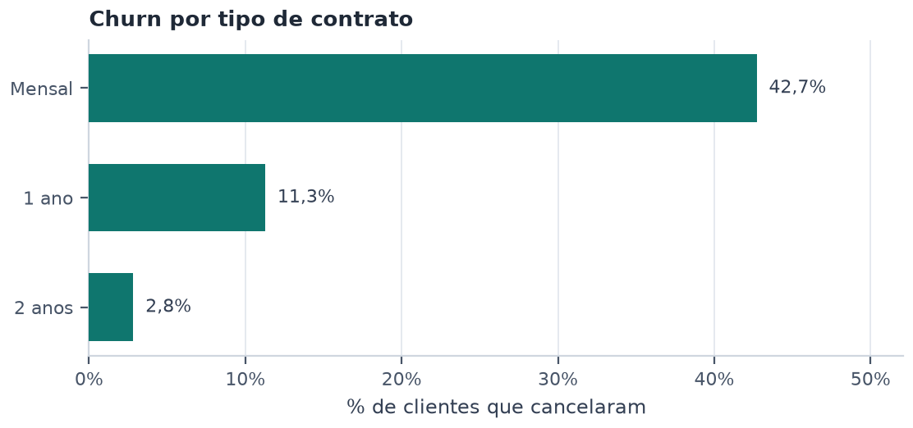
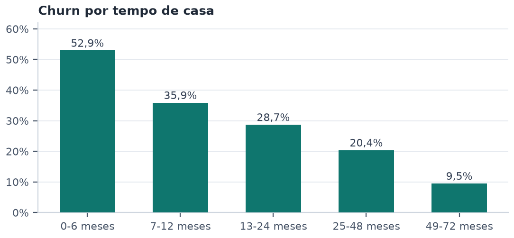
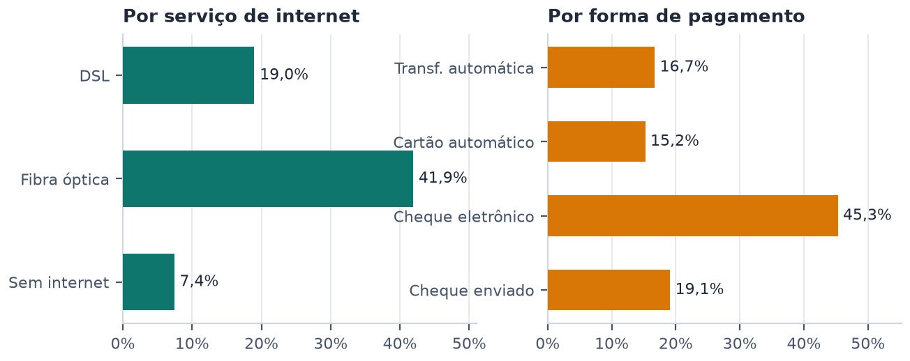
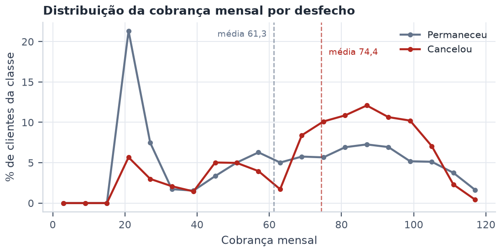
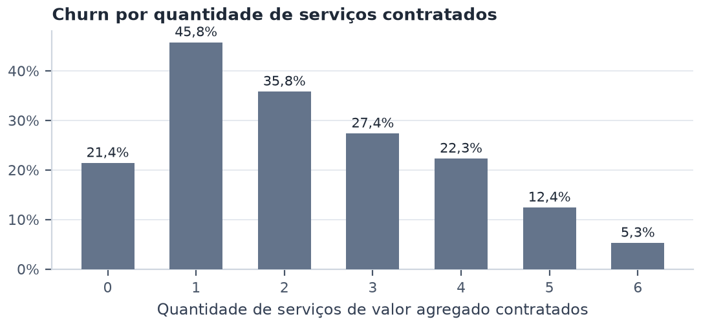
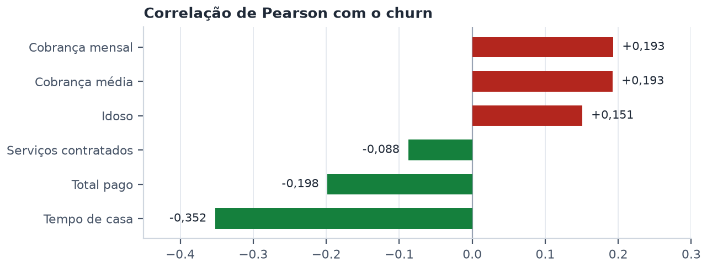
Um classificador que sempre responde “não cancela” acerta 73,5% dos casos e tem recall zero: não identifica nenhum cliente em risco. A acurácia premia o acerto na classe majoritária e esconde o custo operacional do problema. Por isso o critério de seleção foi o PR-AUC (average precision), que olha para a classe positiva, e o ponto de operação foi escolhido por F1 nas previsões out-of-fold do treino.
O protocolo foi desenhado para responder a uma pergunta simples: qual modelo entrega o melhor ranking de risco, medido de forma honesta? Para isso, todas as decisões que poderiam “espiar” o teste foram tomadas antes da avaliação final, e o teste foi usado uma única vez.
A divisão é feita antes de qualquer limpeza ou transformação. StandardScaler e OneHotEncoder vivem dentro de um Pipeline ajustado somente nos 5.634 clientes de treino. Isso significa que médias, desvios e categorias não “veem” o teste. O mesmo módulo src/features.py é usado pelo treino e pela API, eliminando divergência entre treino e produção (train/serve skew).
| Métrica | O que mede | Papel no projeto |
|---|---|---|
| ROC-AUC | Capacidade de ordenar positivos acima de negativos em todos os limiares | Comparação entre modelos e busca de hiperparâmetros |
| PR-AUC | Área sob a curva precisão × recall, focada na classe positiva | Critério de seleção — adequado ao desbalanceamento |
| Precisão | Dos clientes sinalizados, quantos realmente cancelaram | Custo de falsos alarmes na fila de retenção |
| Recall | Dos clientes que cancelaram, quantos foram sinalizados | Cobertura do problema; métrica central para retenção |
| F1 | Média harmônica entre precisão e recall | Escolha do limiar operacional (OOF do treino) |
| Brier | Erro quadrático médio das probabilidades | Qualidade da calibração das probabilidades |
| Acurácia | Acertos totais | Apenas descritiva; não usada para selecionar |
O modelo devolve uma probabilidade; a operação precisa de uma decisão binária. O limiar foi escolhido maximizando F1 nas previsões OOF do treino, resultando em 0,34. Esse valor não foi ajustado no teste. A seção 8 mostra o efeito de outros limiares e discute o trade-off em termos de negócio.
Todos os candidatos foram treinados nos mesmos 5.634 clientes, avaliados nos mesmos 1.409 clientes, com o mesmo pré-processamento e a mesma grade de validação. Nenhum algoritmo recebeu tratamento privilegiado. As grades e os tempos de busca são apresentados na próxima seção.
Cinco famílias diferentes foram colocadas lado a lado. A diversidade é intencional: modelos lineares oferecem simplicidade e interpretabilidade; árvores capturam interações; ensembles reduzem variância ou corrigem viés de forma sequencial. Comparar todos sob o mesmo protocolo evita escolher por preferência pessoal.
Modelo linear que estima o log-odds do churn como combinação das variáveis: log(p/(1−p)) = β₀ + βᵀx. É simples, estável e altamente interpretável, mas precisa que interações e não linearidades sejam representadas explicitamente. A regularização controla overfitting; o parâmetro class_weight permite compensar o desbalanceamento. Serviu como referência forte de simplicidade.
Uma única árvore particiona o espaço de atributos com cortes que maximizam a pureza dos nós. É fácil de explicar, mas instável: pequenas mudanças nos dados podem mudar a estrutura. A profundidade e o número mínimo de folhas foram limitados para evitar decorar o treino. Mesmo assim, foi o modelo com maior recall e menor precisão — muitos alarmes falsos.
Um ensemble de muitas árvores treinadas em amostras bootstrap e subconjuntos aleatórios de atributos. A média reduz a variância da árvore única e melhora a generalização. O parâmetro class_weight foi testado para dar mais peso à classe minoritária. É robusto, porém menos interpretável e, neste problema, ficou atrás em PR-AUC.
Ensemble aditivo de árvores rasas. Cada nova árvore é ajustada ao resíduo (gradiente negativo da entropia cruzada) das anteriores e somada com fator de aprendizado ν:
Árvores de profundidade 2 capturam interações simples (por exemplo, contrato mensal e pouco tempo de casa) sem decorar o treino. A taxa de aprendizado baixa (0,05) com 150 árvores produz um ajuste suave e calibrado. Foi o modelo selecionado.
Implementação de gradient boosting com regularização explícita, otimização de segunda ordem e tratamento eficiente de dados esparsos. É uma alternativa industrial forte e ficou muito próxima do Gradient Boosting do scikit-learn. A grade incluiu scale_pos_weight para compensar o desbalanceamento. A diferença final de PR-AUC foi pequena, mas o F1 no limiar foi menor.
| Algoritmo | Família | Melhores hiperparâmetros | Combinações | Tempo |
|---|---|---|---|---|
| Regressao Logistica | Modelo linear (regressao logistica) | C=10.0, class_weight=None | 6 | 4,3 s |
| Arvore de Decisao | Arvore única (CART) | class_weight=balanced, max_depth=5, min_samples_leaf=50 | 24 | 1,5 s |
| Random Forest | Ensemble de árvores (bagging) | class_weight=balanced, max_depth=10, max_features=sqrt, min_samples_leaf=5 | 8 | 7,4 s |
| Gradient Boosting | Ensemble de árvores (boosting) | learning_rate=0.05, max_depth=2, n_estimators=150 | 8 | 9,2 s |
| XGBoost | Gradient boosting regularizado | learning_rate=0.05, max_depth=3, n_estimators=200, scale_pos_weight=1 | 16 | 6,6 s |
Tempos medidos no ambiente de treino (uma execução, semente 42). O tempo total do experimento, incluindo avaliação e artefatos, foi de 41,30 s.
Todos os modelos foram avaliados no mesmo conjunto de 1.409 clientes, que não participou do treino nem da escolha de hiperparâmetros ou limiar. A tabela ordena os modelos pelo critério de seleção definido antes do teste: PR-AUC.
| Modelo | ROC-AUC (CV) | PR-AUC | ROC-AUC | F1@limiar | Recall@limiar | Precisão@limiar | Limiar |
|---|---|---|---|---|---|---|---|
| Gradient Boosting | 0,850 ± 0,012 | 0,663 | 0,845 | 0,638 | 72,5% | 57,0% | 0,34 |
| XGBoost | 0,848 ± 0,011 | 0,658 | 0,844 | 0,632 | 75,7% | 54,2% | 0,32 |
| Random Forest | 0,847 ± 0,009 | 0,652 | 0,841 | 0,627 | 79,4% | 51,7% | 0,48 |
| Arvore de Decisao | 0,832 ± 0,014 | 0,628 | 0,836 | 0,625 | 73,5% | 54,4% | 0,59 |
| Regressao Logistica | 0,846 ± 0,013 | 0,628 | 0,841 | 0,615 | 71,4% | 54,0% | 0,34 |
| Baseline (classe majoritaria) | — | 0,265* | 0,500 | — | 0,0% | — | — |
* O PR-AUC de um classificador aleatório equivale à prevalência da classe positiva (26,5%). ROC-AUC de CV é a média de 5 folds no treino; as demais métricas são do teste. F1, recall e precisão usam o limiar operacional de cada modelo, escolhido por F1 out-of-fold no treino.
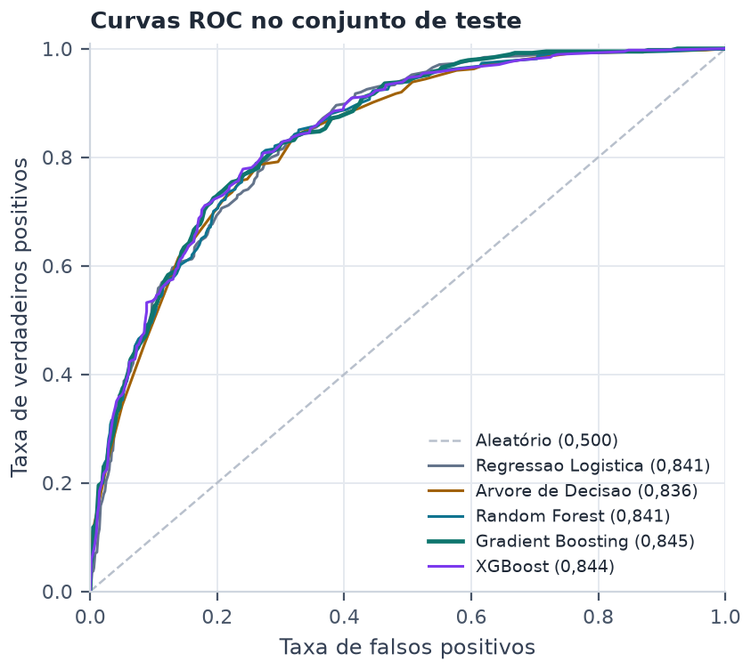
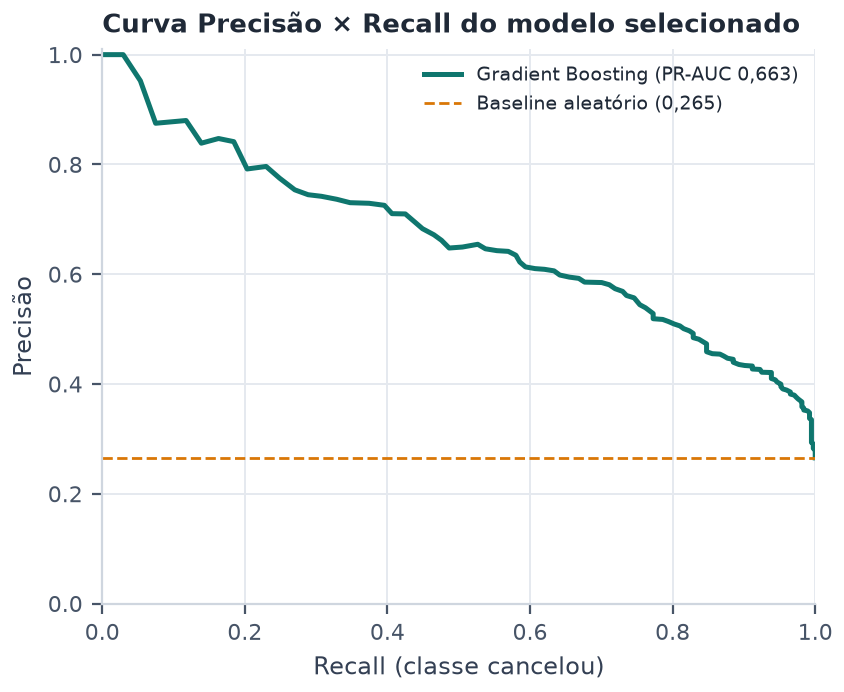
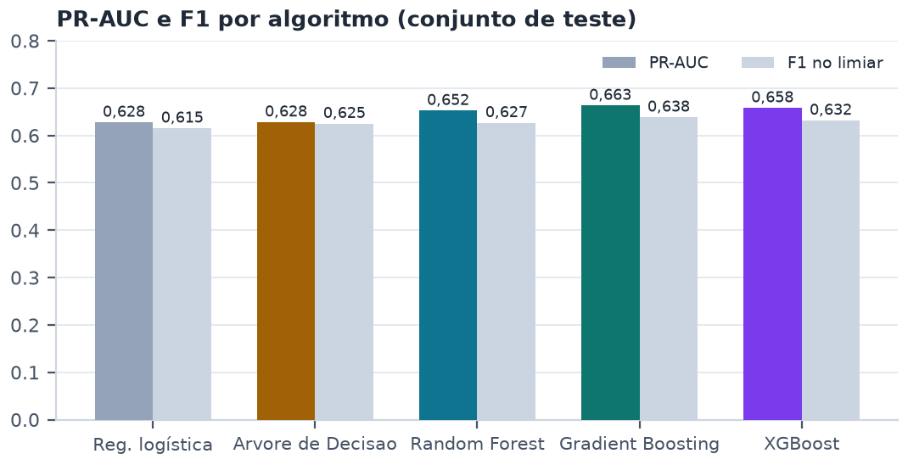
Um número único esconde a variabilidade amostral. Os intervalos de confiança de 95% por bootstrap (2.000 reamostragens do teste) mostram a faixa plausível para cada métrica do modelo selecionado:
| Métrica | Estimativa | IC 95% |
|---|---|---|
| Recall (cancelou) | 72,5% | 67,7% – 76,9% |
| Precisão | 57,0% | 52,4% – 61,4% |
| F1 | 0,638 | 0,598 – 0,676 |
| ROC-AUC | 0,845 | 0,822 – 0,866 |
| PR-AUC | 0,663 | — (não bootstrapped no artefato) |
| Brier | 0,136 | — |
O recall pode variar de 67,7% a 76,9% em outra amostra do mesmo processo. Isso é relevante para expectativas operacionais: prometer “capturamos 72%” sem essa faixa seria excesso de confiança. A decisão individual deve combinar o score com julgamento humano.
O Brier score de 0,136 e a curva de calibração mostram que as probabilidades não são apenas um ranking: elas aproximam a frequência observada. Nas faixas altas, a taxa observada de churn acompanha a probabilidade prevista; nas faixas baixas há alguma subestimação, mas o modelo não produz probabilidades absurdas. Isso permite usar o score para dimensionar a fila de retenção.
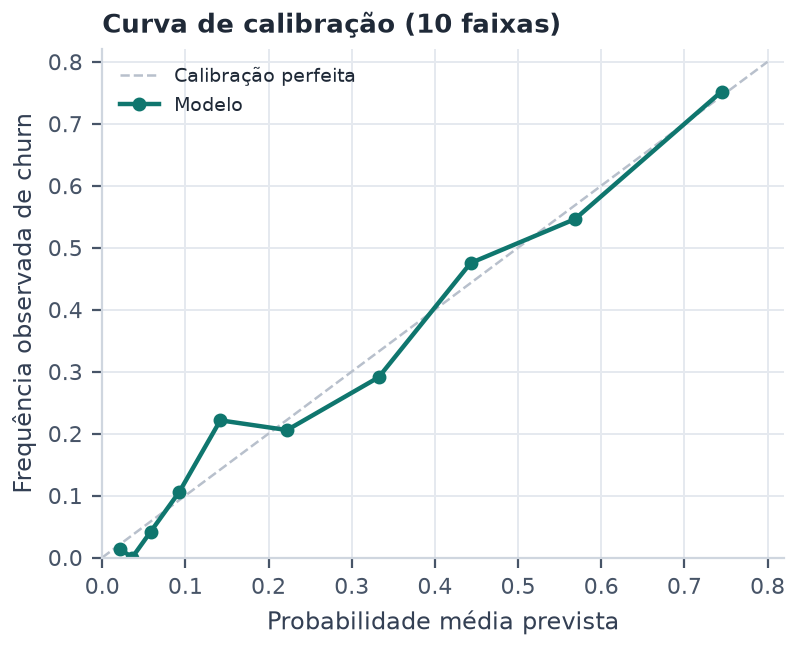
O modelo escolhido é o Gradient Boosting com learning_rate=0,05, max_depth=2 e n_estimators=150. Ele é um ensemble de 150 árvores rasas que se corrigem sequencialmente; a baixa profundidade limita a capacidade de decorar o treino, e a taxa de aprendizado pequena suaviza o ajuste.
O critério foi definido antes da avaliação: maior PR-AUC no teste. O Gradient Boosting obteve 0,663, à frente de XGBoost (0,658), Random Forest (0,652), Árvore de Decisão (0,628) e Regressão Logística (0,628). Como desempate e validação de utilidade, também apresentou o maior F1 no limiar operacional (0,638). A escolha não foi feita olhando o teste repetidamente: o teste foi aberto uma vez, ao final.
O limiar de 0,34 foi escolhido maximizando F1 nas previsões out-of-fold do treino. Ele não é sagrado: se a equipe de retenção tem pouca capacidade, subir o limiar reduz falsos alarmes e aumenta a precisão, ao custo de deixar passar mais cancelamentos. Se o custo de perder um cliente é muito alto, descer o limiar amplia a cobertura. A tabela abaixo, calculada sobre as probabilidades reais do teste, mostra o efeito concreto dessa escolha:
| Limiar | Acionados | TP | FP | FN | Recall | Precisão | F1 |
|---|---|---|---|---|---|---|---|
| 0,20 | 659 | 314 | 345 | 60 | 84,0% | 47,6% | 0,608 |
| 0,30 | 536 | 287 | 249 | 87 | 76,7% | 53,5% | 0,631 |
| 0,34 | 475 | 271 | 204 | 103 | 72,5% | 57,1% | 0,638 |
| 0,50 | 288 | 188 | 100 | 186 | 50,3% | 65,3% | 0,568 |
| 0,60 | 176 | 128 | 48 | 246 | 34,2% | 72,7% | 0,465 |
TP = cancelamentos corretamente sinalizados; FP = clientes que permaneceriam mas entram na fila; FN = cancelamentos não detectados. “Acionados” = TP + FP.
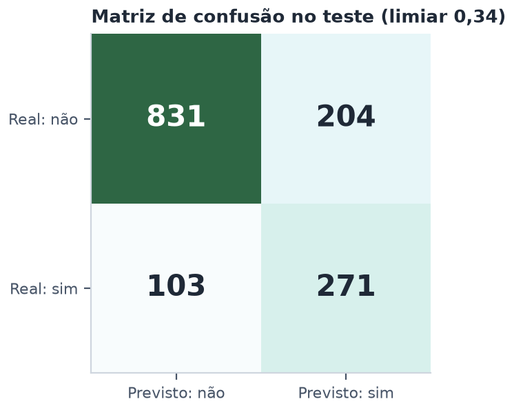
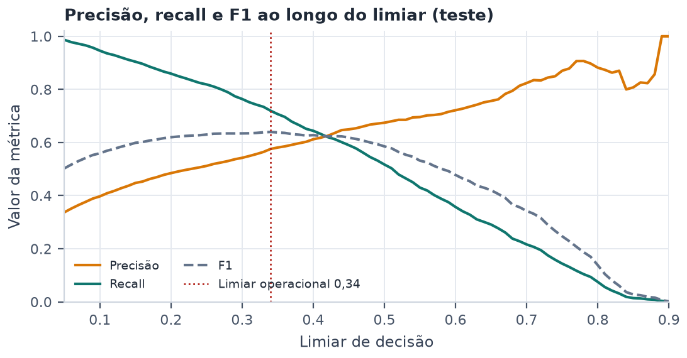
Um score sem explicação é difícil de operacionalizar. A interpretação foi tratada em dois níveis: global, para entender quais atributos o modelo mais usa, e local, para justificar a probabilidade de um cliente específico.
A importância por permutação mede quanto o ROC-AUC cai quando um atributo é embaralhado no teste, destruindo sua relação com o alvo. É uma medida agnóstica ao modelo e complementa a importância nativa das árvores.
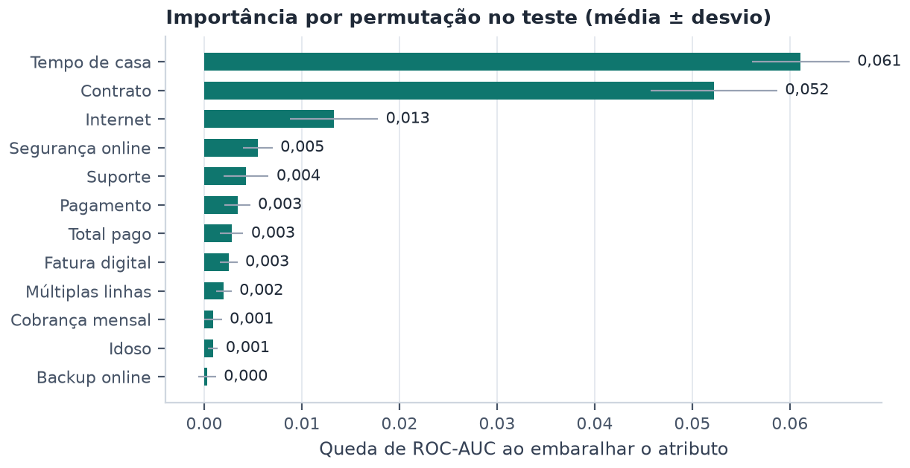
| Atributo | Queda de ROC-AUC | Desvio |
|---|---|---|
| Tempo de casa | 0,061 | 0,005 |
| Tipo de contrato | 0,052 | 0,006 |
| Serviço de internet | 0,013 | 0,004 |
| Segurança online | 0,005 | 0,002 |
| Suporte técnico | 0,004 | 0,002 |
| Forma de pagamento | 0,003 | 0,001 |
| Total já pago | 0,003 | 0,001 |
| Fatura digital | 0,003 | 0,001 |
Os dois atributos dominantes — tempo de casa e tipo de contrato — são justamente os que a análise exploratória apontou. Internet, segurança online e suporte vêm em seguida, com efeitos menores. Atributos demográficos como gênero e dependentes têm contribuição quase nula neste modelo, o que é um bom sinal para a discussão de equidade.
Para o perfil NC-003 do lote de novos clientes, o modelo estima 82,6% de churn — faixa crítica. A tabela mostra o efeito de neutralizar cada atributo (substituí-lo pela mediana/moda da base), mantendo os demais valores do cliente. A coluna “impacto” é quanto a probabilidade cai, em pontos percentuais, quando aquele atributo deixa de contribuir:
| Atributo | Valor do cliente | Referência da base | Impacto |
|---|---|---|---|
| Tempo de casa | 1 meses | 29 meses | +35,9 p,p, |
| Total já pago | R$ 79,90 | R$ 1.394,55 | +4,3 p,p, |
| Idoso (60+) | Sim | Não | +2,0 p,p, |
| Cobrança mensal | R$ 79,90 | R$ 70,35 | +0,5 p,p, |
| Cobrança média | R$ 79,90 | R$ 70,34 | +0,4 p,p, |
| Gênero | Male | Male | +0,0 p,p, |
| Parceiro(a) | No | No | +0,0 p,p, |
Probabilidade de referência com todos os atributos neutralizados: 40,2%. A explicação local deste relatório usa neutralização de atributo; a API em produção usa valores SHAP (TreeExplainer), que decompõem a margem do modelo de forma aditiva.
O projeto não termina no notebook: o modelo treinado é persistido, servido por uma API e apresentado em um painel web. Há duas formas de acesso — uma versão local com FastAPI e uma versão estática publicada no GitHub Pages, que funciona sem servidor e sem instalar nada.
src/train.py treina os cinco modelos, seleciona o melhor e grava artifacts/modelo_previa.joblib, resultados.json e previsoes_teste.csv. A API em src/api.py carrega o artefato e serve o painel em web/. As probabilidades vêm do pipeline treinado, não de regras fixas.
| Método | Rota | Descrição |
|---|---|---|
| GET | /api/saude | Status do serviço e do modelo |
| GET | /api/modelo-info | Metadados, hiperparâmetros e versões |
| GET | /api/resultados | Métricas completas consumidas pelo painel |
| GET | /api/novos-clientes | Previsões em lote para os 12 perfis |
| GET | /api/amostra-teste | Amostra do conjunto de teste para auditoria |
| POST | /api/prever | Probabilidade de um cliente + explicação SHAP |
| POST | /api/prever-lote | Probabilidade para uma lista de até 500 clientes |
O painel tem seis seções: Visão geral, Base de dados, Análise exploratória, Modelo de Machine Learning (algoritmos, comparação, métricas, matriz de confusão, curva de limiar, importância e ficha técnica), Simulador de risco (formulário, medidor e explicação) e Clientes em risco (ranking da base com filtros e busca). Os gráficos são desenhados em SVG a partir dos dados reais.
Para que o link funcione em qualquer computador, sem Python e sem API, o site publica uma versão estática do painel. Um script de exportação lê os artefatos e embute:
A inferência no navegador foi validada contra o Python em 120 perfis aleatórios, com diferença máxima de 4,9 × 10⁻⁷ — ou seja, o site não mostra uma aproximação: mostra o mesmo modelo. O teste também reproduziu as 1.409 probabilidades de previsoes_teste.csv.
Um modelo útil é um modelo com limites explícitos. Esta seção não é um apêndice jurídico: ela define o que o sistema pode e não pode afirmar, e como usá-lo sem transformar uma probabilidade em sentença.
Gênero e faixa etária (SeniorCitizen) entram como variáveis. A importância por permutação mostra efeito global pequeno, mas isso não basta: um atributo pode ter efeito pequeno na média e relevante em subgrupos. Antes de usar o score para orientar ofertas, é necessário:
O projeto usa uma base pública e não manipula nome, CPF, endereço ou contato. Ainda assim, um score de propensão é dado pessoal quando associado a um cliente identificável. Em uma implantação real, aplicam-se princípios de minimização, finalidade, segurança, transparência e direito de revisão, além das regras setoriais e da LGPD. O simulador não deve ser exposto publicamente com dados reais de clientes. Na versão de demonstração, a API libera CORS para facilitar testes; em produção, isso deve ser restrito, com autenticação, rate limiting e registro de auditoria. Nenhuma decisão automatizada de negativa de serviço é tomada pelo modelo.
| Risco | Consequência | Mitigação |
|---|---|---|
| Correlação lida como causa | Oferta errada ou expectativa falsa sobre o efeito de uma variável | Comunicar associação; testar intervenções com experimentos |
| Validação aleatória, não temporal | Métricas otimistas se o comportamento mudar ao longo do tempo | Backtest temporal e monitoramento de drift |
| Base de uma única operadora | Padrões não transferem para outro mercado | Recalibrar e revalidar antes de reutilizar |
| Probabilidade com incerteza | Decisões individuais tratadas como certeza | Usar faixas e combinar com julgamento humano |
| Atributos sensíveis | Tratamento desigual de gênero ou faixa etária | Auditoria de equidade e revisão de uso |
| Feedback loop | Contatar só os sinalizados muda os dados futuros | Registrar intervenções e comparar grupos |
| Deriva de população | Queda silenciosa de desempenho | Monitorar distribuição, recalibrar e retreinar |
O projeto entregou um sistema completo de previsão de churn: da base pública real à interface publicada, passando por análise exploratória, comparação de cinco algoritmos, seleção justificada, calibração do limiar, interpretação e documentação. O resultado central é robusto e verificável: no conjunto de teste, o Gradient Boosting alcança PR-AUC 0,663, ROC-AUC 0,845 e, no limiar 0,34, recall de 72,5% com precisão de 57,0%.
Mais importante do que o número é o processo que o sustenta: divisão antes do ajuste, pré-processamento dentro do pipeline, teste usado uma única vez, limiar escolhido em previsões out-of-fold, incerteza quantificada e comparação sob o mesmo protocolo. Esses detalhes são o que separa um resultado acadêmico confiável de uma demonstração otimista.
| Frente | O que fazer | Por que |
|---|---|---|
| Validação temporal | Separar treino e teste por data e acompanhar drift | Aproximar o modelo do uso real |
| Modelo de uplift | Estimar o efeito incremental de cada oferta | Evitar gastar com quem já ficaria |
| Custo assimétrico | Otimizar o limiar por custo de retenção vs perda | Transformar o trade-off em decisão econômica |
| Equidade | Auditar métricas por subgrupo e ajustar políticas | Reduzir risco de tratamento desigual |
| Monitoramento | Painel de distribuição, calibração e recall ao longo do tempo | Detectar degradação antes do prejuízo |
| Experimentação | Testes A/B com grupo de controle | Medir o efeito real da retenção |
O churn é um problema de decisão sob incerteza. O valor deste trabalho não está em prometer certeza, mas em oferecer uma forma disciplinada de priorizar atenção, comunicar risco e aprender com o resultado. Nesse sentido, o modelo está pronto para ser usado como ponto de partida — e as limitações estão documentadas para que ele seja usado com maturidade.
Todo o resultado pode ser regenerado a partir da base pública. O treino é determinístico para a semente 42 e o tempo total registrado foi de 41,30 s. Os artefatos ficam em artifacts/; o model card em reports/modelo_card.md; o painel em web/.
Python 3.12 · scikit-learn 1.9.1 · pandas 3.1.1 · numpy 2.5.5 · Matplotlib 3.11 · Microsoft Edge headless (A4) · semente 42. Artefato do modelo: artifacts/modelo_previa.joblib.
| Coluna | Tipo | Papel | Descrição |
|---|---|---|---|
| customerID | Texto | Identificador | Código único do cliente; removido antes do treino. |
| gender | Categórica | Atributo | Female / Male. |
| SeniorCitizen | Binária (0/1) | Atributo | 1 se o cliente tem 60 anos ou mais. |
| Partner | Categórica | Atributo | Possui parceiro(a): Yes / No. |
| Dependents | Categórica | Atributo | Possui dependentes: Yes / No. |
| tenure | Numérica | Atributo | Meses como cliente (0 a 72). |
| PhoneService | Categórica | Atributo | Assinatura de telefone: Yes / No. |
| MultipleLines | Categórica | Atributo | Linhas múltiplas: Yes / No / No phone service. |
| InternetService | Categórica | Atributo | DSL / Fiber optic / No. |
| OnlineSecurity | Categórica | Atributo | Segurança online: Yes / No / No internet service. |
| OnlineBackup | Categórica | Atributo | Backup online: Yes / No / No internet service. |
| DeviceProtection | Categórica | Atributo | Proteção do aparelho: Yes / No / No internet service. |
| TechSupport | Categórica | Atributo | Suporte técnico: Yes / No / No internet service. |
| StreamingTV | Categórica | Atributo | Streaming de TV: Yes / No / No internet service. |
| StreamingMovies | Categórica | Atributo | Streaming de filmes: Yes / No / No internet service. |
| Contract | Categórica | Atributo | Month-to-month / One year / Two year. |
| PaperlessBilling | Categórica | Atributo | Fatura digital: Yes / No. |
| PaymentMethod | Categórica | Atributo | Cheque eletrônico, cheque enviado, transferência ou cartão. |
| MonthlyCharges | Numérica | Atributo | Cobrança mensal em unidades monetárias da base. |
| TotalCharges | Numérica | Atributo | Total já cobrado; 11 células em branco (tenure = 0) tratadas como 0. |
| Churn | Categórica | Alvo | Yes se o cliente cancelou; No caso contrário. |
| ServicosContratados | Numérica | Derivado | Quantidade de serviços de valor agregado (0 a 6). |
| CobrancaMedia | Numérica | Derivado | TotalCharges ÷ tenure; para tenure = 0 usa MonthlyCharges. |
A base bruta tem 21 colunas. Após remover o identificador e o alvo, restam 19 atributos originais; com os dois derivados, o modelo usa 21 atributos. O one-hot com agrupamento de categorias raras produz 47 colunas numéricas.
| Campo | Valor |
|---|---|
| Algoritmo | GradientBoostingClassifier (scikit-learn) |
| Hiperparâmetros | learning_rate=0,05 · max_depth=2 · n_estimators=150 · random_state=42 |
| Entrada | 19 atributos originais + 2 derivados = 21 |
| Transformação | StandardScaler (6 numéricas) + OneHotEncoder (15 categóricas, min_frequency=10) |
| Colunas após transformação | 47 |
| Alvo | Churn (Yes/No), codificado como 1/0 |
| Limiar operacional | 0,34 (F1 out-of-fold no treino) |
| Treino / teste | 5.634 / 1.409 |
| PR-AUC (teste) | 0,663 |
| ROC-AUC (teste) | 0,845 (IC 95%: 0,822–0,866) |
| Recall (limiar) | 72,5% (IC 95%: 67,7%–76,9%) |
| Precisão (limiar) | 57,0% |
| F1 (limiar) | 0,638 (IC 95%: 0,598–0,676) |
| Brier | 0,136 |
| Matriz de confusão | TN 831 · FP 204 · FN 103 · TP 271 |
| Artefato | artifacts/modelo_previa.joblib |
| Termo | Definição |
|---|---|
| Churn | Cancelamento do cliente; no projeto, Churn = Yes. |
| Classe positiva | Evento de interesse (cancelamento), minoritário na base. |
| Desbalanceamento | Distribuição desigual entre classes; aqui 26,5% de positivos. |
| Pipeline | Sequência de transformações e modelo ajustada como uma unidade, evitando vazamento. |
| Vazamento (leakage) | Uso indevido de informação do teste no treino ou na escolha do modelo. |
| Validação cruzada | Divisão do treino em folds para estimar desempenho e ajustar hiperparâmetros. |
| OOF | Previsões out-of-fold: cada cliente do treino é previsto por um modelo que não o viu. |
| ROC-AUC | Probabilidade de ordenar um positivo acima de um negativo. |
| PR-AUC | Área sob a curva precisão × recall; adequada a classes desbalanceadas. |
| Limiar | Probabilidade a partir da qual o cliente é sinalizado para retenção. |
| Calibração | Concordância entre probabilidade prevista e frequência observada. |
| SHAP | Método de atribuição aditiva da previsão aos atributos. |
| Deriva (drift) | Mudança na distribuição dos dados ao longo do tempo. |
O painel e o PDF ficam disponíveis independentemente do computador ou servidor local. O simulador de risco calcula as probabilidades no próprio navegador, com o mesmo modelo treinado em Python.